Tin nhắn Marketing
Tin nhắn Marketing là gì?
Một số khách hàng có thể bỏ lỡ nội dung chương trình của bạn hoặc chỉ muốn tương tác với thương hiệu của bạn bằng tin nhắn trực tiếp. Để cập nhật tin nhắn trực tiếp cho khách hàng, bạn có thể cung cấp cho họ tùy chọn đăng ký nội dung tiếp thị của bạn thông qua Tin nhắn Marketing.
Tin nhắn Marketing cho phép bạn chủ động gửi tin nhắn dựa trên chủ đề theo tần suất mỗi ngày cho những khách hàng đã chọn tham gia nhận tin nhắn.
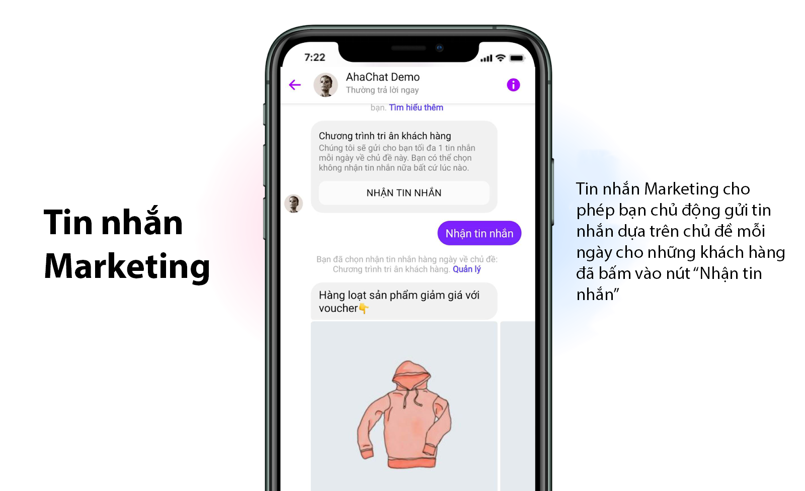
Tạo chủ đề Tin nhắn Marketing
Để sử dụng Tin nhắn Marketing trên AhaChat, bạn cần phải tạo chủ đề cho tin nhắn, để tạo chủ để bạn làm theo các bước.
Truy cập vào AhaChat và vào menu “Cài đặt”. Tại đây bạn sẽ nhìn thấy mục “Chủ đề”, hãy tiến hành tạo chủ đề mới ở phần Chủ Đề Tin nhắn Marketing với nút “Tạo mới” và nhập tên, nội dung cho chủ đề (xem hình dưới).
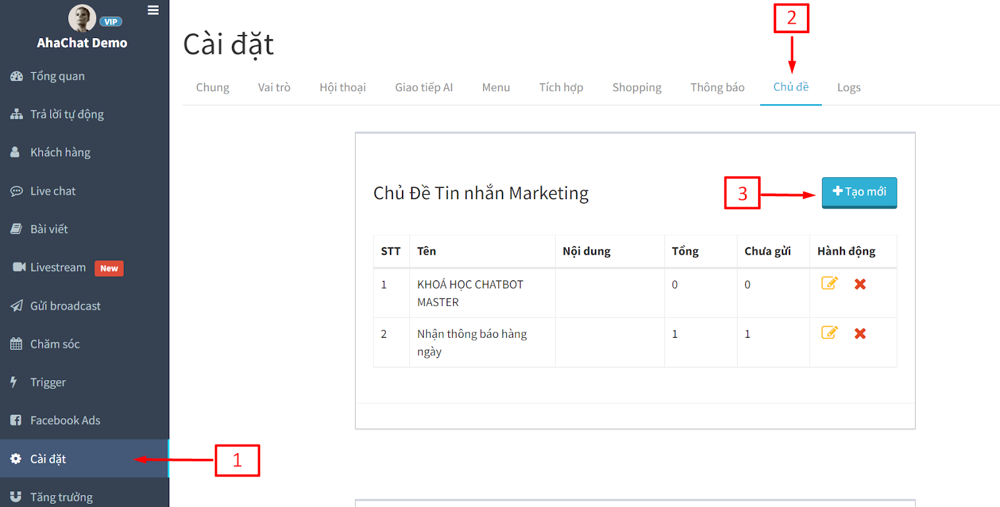
Làm cách nào để sử dụng?
Bạn có thể tạo Tin nhắn Marketing bao gồm hình ảnh, tiêu đề, tiêu đề phụ, nút bấm và thẻ liên kết. Bằng cách này bạn cũng có thể chọn quảng bá thương hiệu của mình theo nhiều cách khác nhau cho từng lĩnh vực kinh doanh của mình
1. Gửi Tin nhắn Marketing thông qua Messenger.
Bạn có thể gửi Chủ đề tin nhắn trong bất kỳ cuộc trò chuyện bằng tin nhắn trực tiếp nào trên Facebook qua AhaChat để cho phép khách hàng bấm đăng ký “Nhận tin nhắn” trên Messenger mà họ có thể quan tâm.
Để tạo được nội dung thông báo “Nhận tin nhắn” trong kịch bản trả lời tự động bạn chọn “Tạo mới block” → chọn block “HỘI THOẠI”
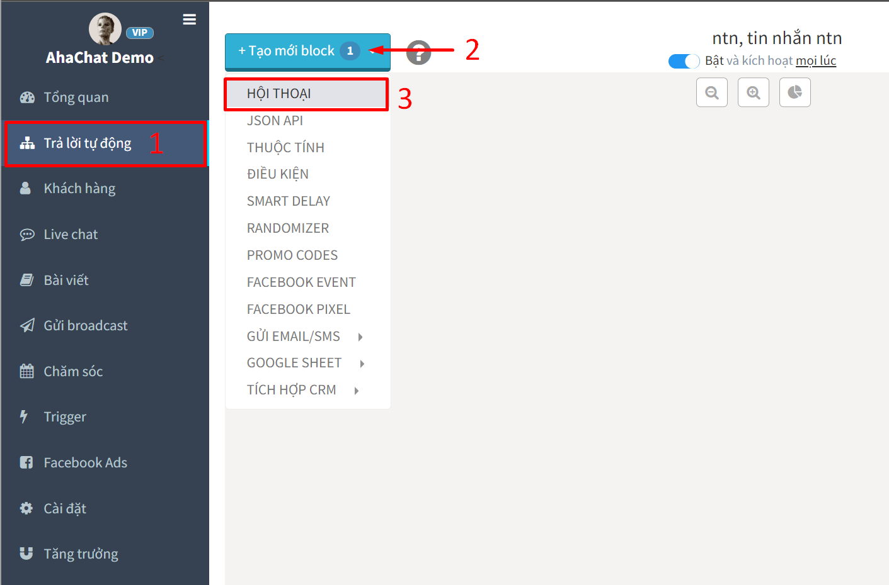
Phần tin nhắn của khách chọn Tin nhắn Marketing
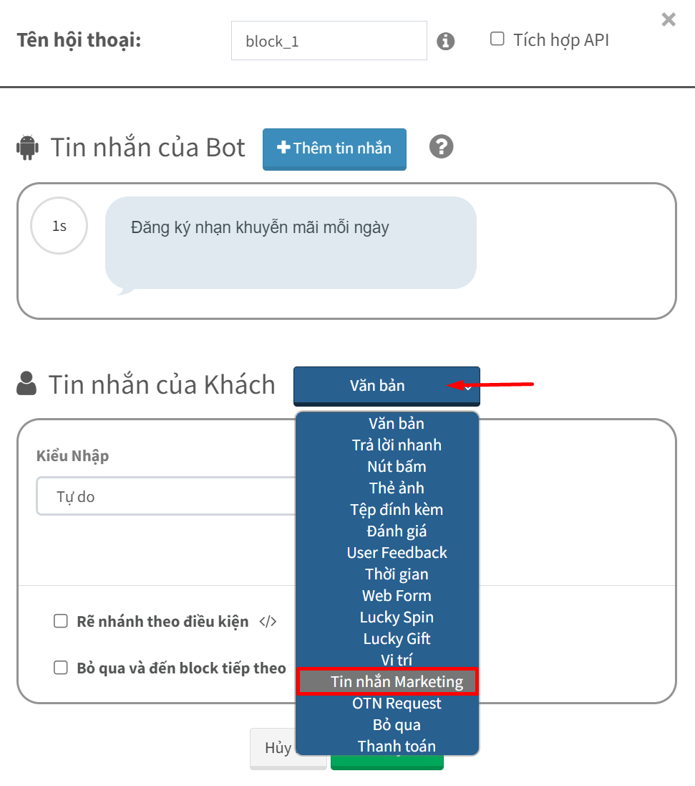
Nhấn vào nút bấm để cài đặt nội dung thông báo
- Tiêu đề: Nhập tiêu đề tối đa 65 ký tự, là tiêu đề bạn gửi tới khách hàng với nội dung thật hấp dẫn nhằm thu hút khách bấm vào nút “Nhận tin nhắn”.
- Hình ảnh: Bạn thêm link hình ảnh hoặc chọn up ảnh lên từ máy, dung lượng dưới 2mb, bạn sử dụng hình ảnh để miêu tả cho thông báo muốn gửi tới khách hàng.
- Tần suất: Bạn được phép lựa chọn 1 trong 3 tần suất gửi tin ( hàng ngày - hàng tuần - hàng tháng) để gửi tin nhắn ngoài 24h cho khách hàng khi khách bấm nút nhận thông báo.
- Chủ đề: Chọn chủ đề bạn đã tạo ở mục “Chủ đề” trong menu Cài đặt.
Trong đó Tần suất:
- HẰNG NGÀY - cho phép các doanh nghiệp gửi một tin nhắn mỗi 24h trong khoảng thời gian 6 tháng.
- HẰNG TUẦN - cho phép các doanh nghiệp gửi 1 tin nhắn trong mỗi tuần (7 ngày)trong khoảng thời gian 9 tháng.
- HẰNG THÁNG - cho phép các doanh nghiệp gửi 1 tin nhắn mỗi tháng (30 ngày) trong khoảng thời gian 12 tháng. Chúng tôi khuyến cáo nên chọn tần suất Hằng Ngày (đây cũng là tuỳ chọn mặc định nếu tần suất không hiển thị)
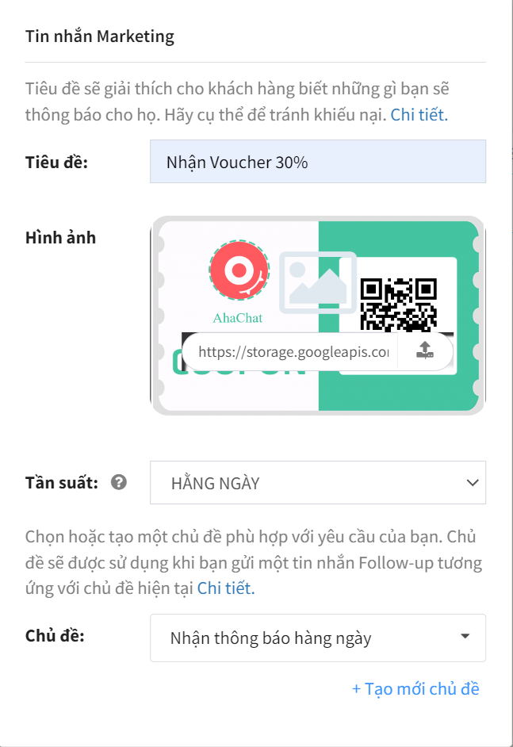
Sau khi bạn gửi tin nhắn thông báo Tin nhắn Marketing cho khách hàng, khách hàng sẽ nhận được tin nhắn như sau:
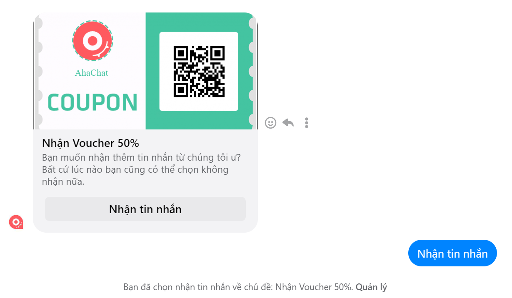
2. Gửi Tin nhắn Marketing thông qua liên kết m.me
Là một loại liên kết cho phép bạn tạo yêu cầu tham gia “Nhận tin nhắn” thông qua url
Quy trình hoạt động của liên kết sẽ như sau
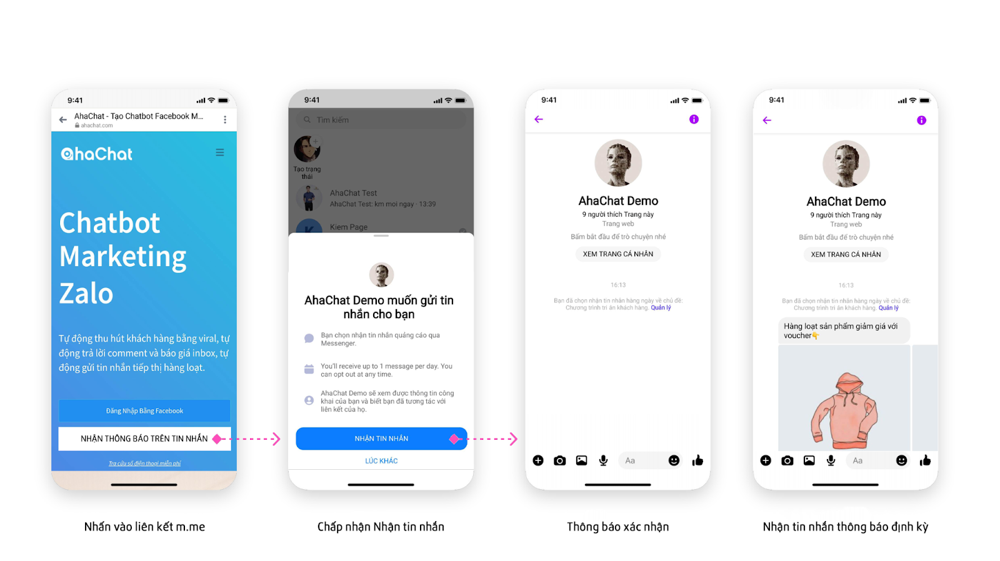
Hướng dẫn tạo liên kết Tin nhắn Marketing trên AhaChat
Truy cập vào AhaChat và vào menu “Tăng trưởng”. Bấm tạo mới và chọn Tin nhắn Marketing
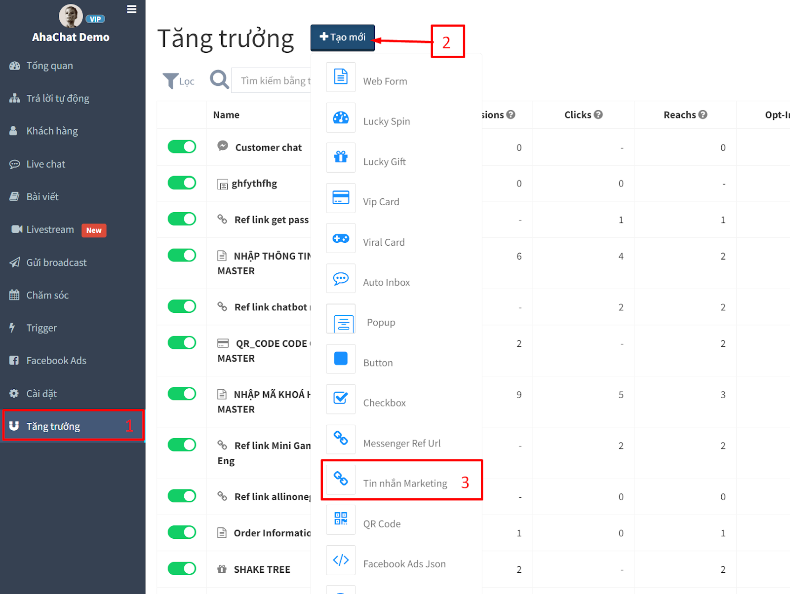
Cài đặt nội dung
- Chủ đề: Chọn tên chủ đề vừa tạo.
- Tần suất: Bạn được phép lựa chọn 1 trong 3 tuần suất gửi tin ( hàng ngày - hàng tuần - hàng tháng) để gửi tin nhắn ngoài 24h cho khách hàng khi khách bấm nút “Nhận tin nhắn”.
- Kịch bản chuyển tiếp: Chọn kịch bản chứa nội dung cuộc trò chuyện sau khi khách hàng bấm “Nhận tin nhắn”
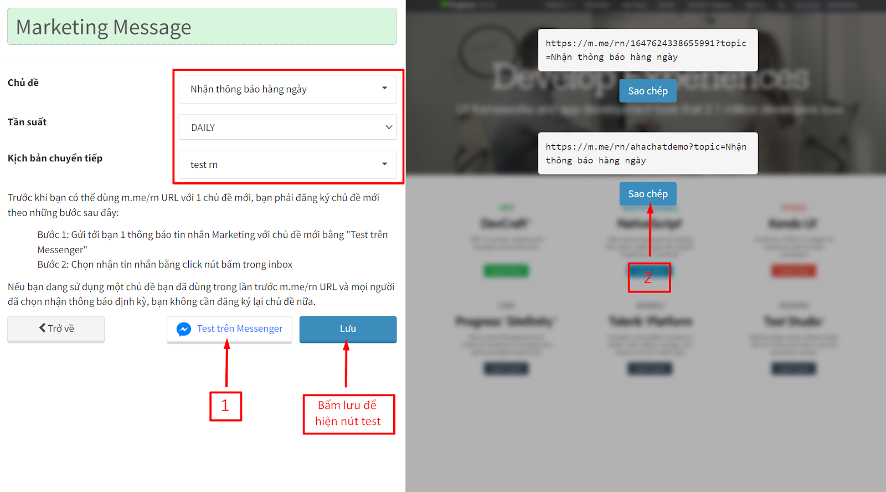
Lưu ý: Trước khi bạn có thể gửi liên kết cho khách hàng với 1 chủ đề mới, bạn phải đăng ký vào chủ để đó trước bằng tài khoản admin của mình. Thực hiện bằng cách bấm vào nút “ Test trên Messenger” (1) và chọn vào nút Nhận tin nhắn trên Messenger.
Bây giờ bạn có thể copy liên kết (2) để sử dụng và gửi cho khách hàng thông qua các hình thức như gắn liên kết trong bài viết trên facebook, gắn vào nút bấm ở website, tạo qr-code đặt tại cửa hàng, gửi qua email, sms, vv…
3. Gửi liên kết Tin nhắn Marketing trong quảng cáo Click to Messenger
Sau khi đã có sẵn liên kết Tin nhắn Marketing, bạn có thể mời thêm người đăng ký nhận tin nhắn trên Messenger bằng Quảng cáo tin nhắn CTM.
3.1 Bạn tiến hành tạo quảng cáo như bình thường, và chọn mục tiêu chiến dịch là "Lượt tương tác" và bấm "Tiếp tục"
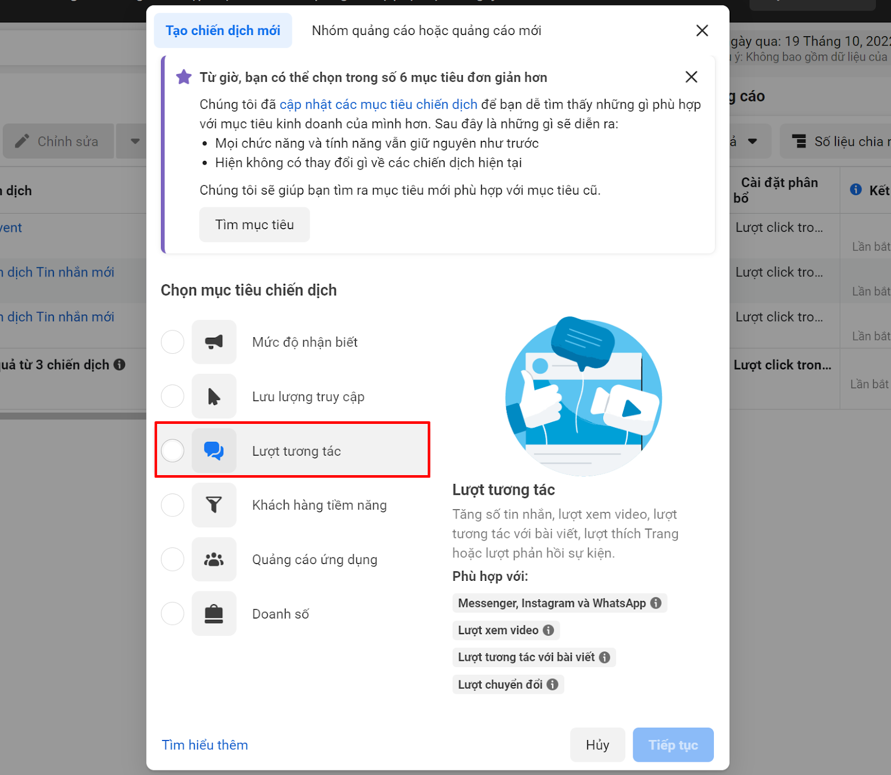
3.2 Ở nút kêu gọi hành động trên bài Quảng cáo chọn "Gửi tin nhắn"
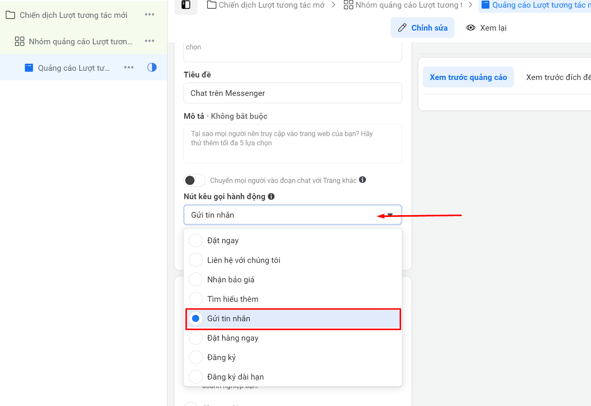
3.3 Kéo xuống phần "Mẫu tin nhắn" → Tạo mới → Bắt chuyện → Chỉnh sửa
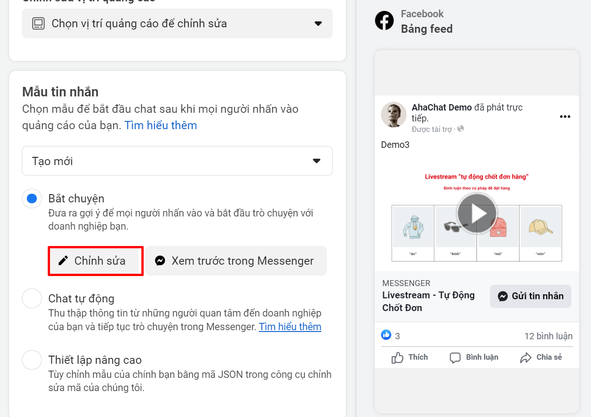
3.4 Thêm nội dung quảng cáo
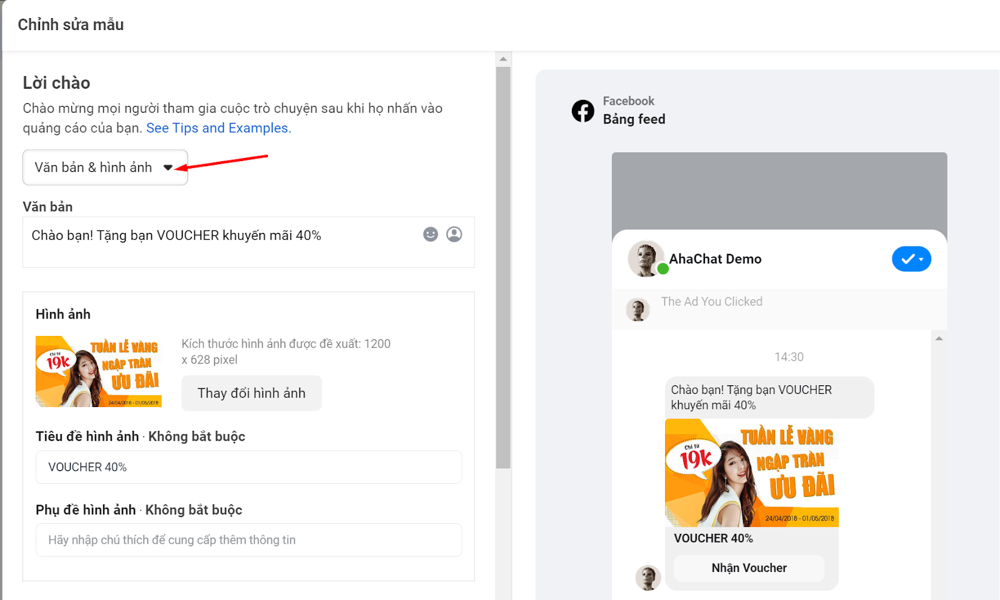
3.5 Phần “Hành động của khách hàng” chọn nút (1) → đặt tên cho nút (2) → chọn gửi yêu cầu đăng lại (3) và thêm liên kết thông báo định kỳ ở bước trên vào đây(4)
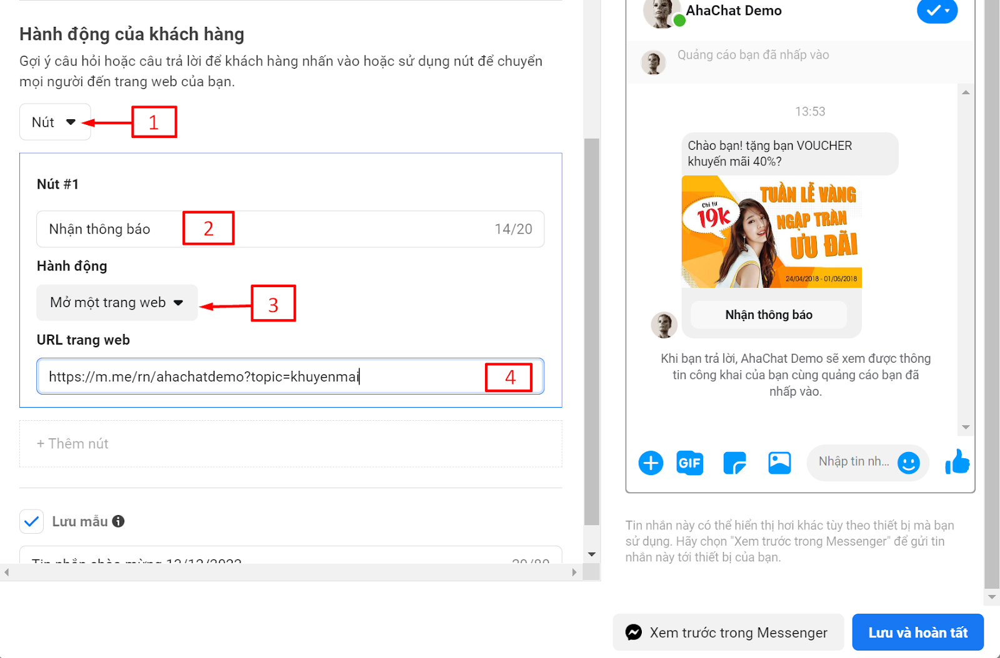
Sau khi khách hàng bấm vào nút Nhận thông báo họ sẽ hiện được kết quả như thế này
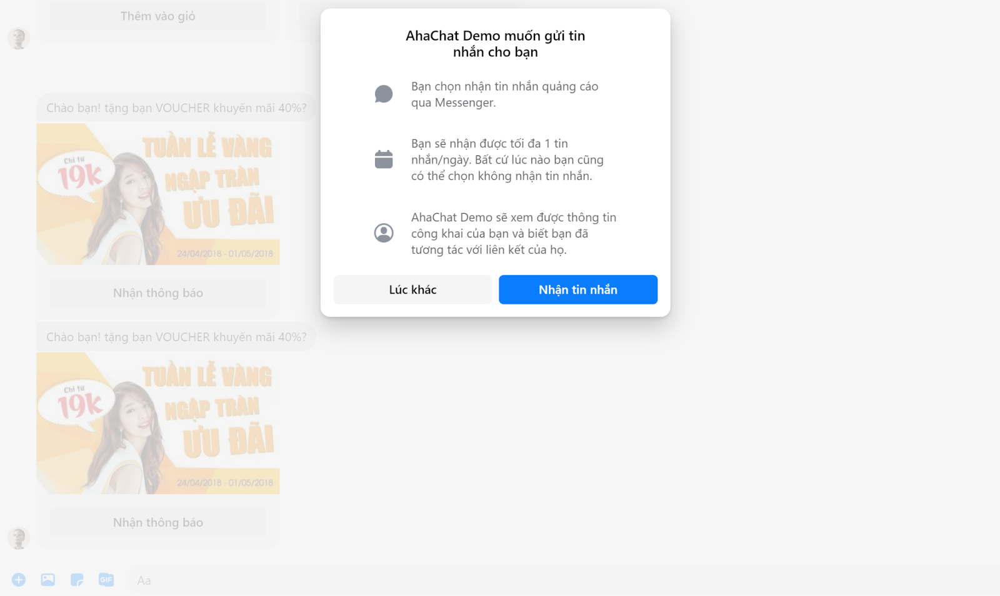
Câu Hỏi Thường Gặp
1. Người dùng có thể hủy đăng ký nhận Tin nhắn Marketing không?
Có. Khi người dùng đăng ký nhận Tin nhắn Marketing, họ sẽ có tùy chọn nhấp vào Quản lý trên ứng dụng Messenger của mình và sau đó hủy đăng ký. Ngoài ra, sau một khoảng thời gian nhất định, khách hàng sẽ được yêu cầu xác nhận rằng họ vẫn quan tâm đến Chủ đề.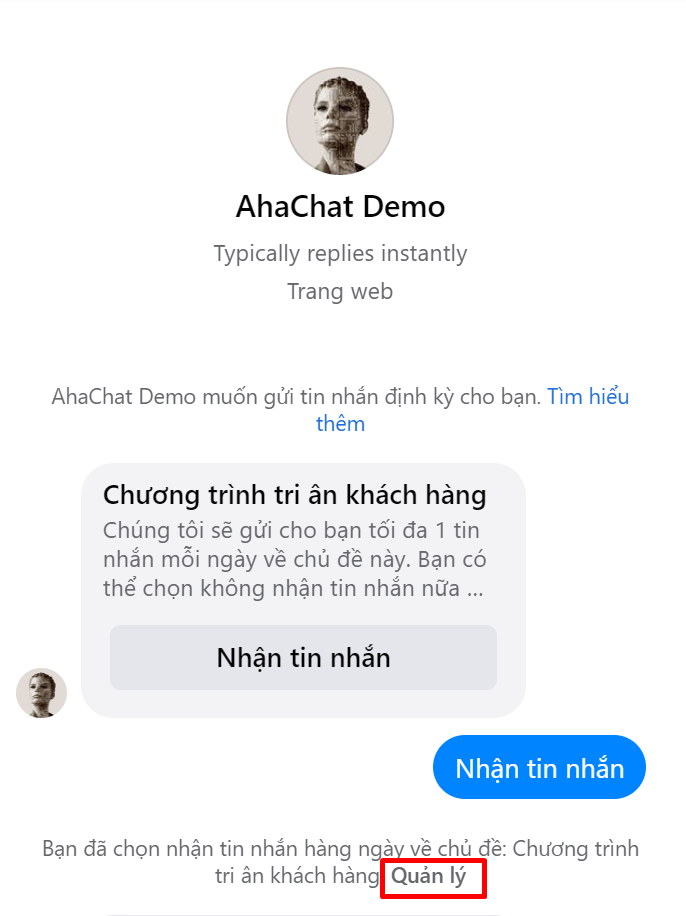
2. Nếu một Chủ đề Tin nhắn Marketing được tạo với tần suất cụ thể, tôi có bị giới hạn về tần suất tôi có thể gửi tin nhắn không?
Có. Khi bạn tạo nội dung gửi Tin nhắn Marketing, bạn phải chọn Chủ đề cụ thể. Chỉ những người dùng đã đăng ký Chủ đề này mới nhận được tin nhắn và bạn chỉ có thể tạo/lên lịch nhắn tin dựa trên tần suất được cài cho Tin nhắn Marketing đó.
Ví dụ: nếu bạn tạo Chủ đề với tần suất hàng tuần, bạn sẽ không thể gửi tin nhắn cho những khách hàng đó nhiều hơn một lần/tuần.
3. Tôi có thể gửi tin nhắn hàng loạt cho tất cả những khách hàng đã đăng ký vào 1 chủ đề không?
Tất nhiên. Bạn có thể gửi tin nhắn tự động và hàng loạt cho tất cả khách hàng đã đăng ký vào một chủ đề cụ thể bằng cách gửi thông qua broadcast hoặc chăm sóc. Xem hướng dẫn cách gửi tại đây
4. Tôi có thể gửi nhiều tin nhắn theo Chủ đề thông báo cho cùng một người dùng, từ cùng một Fanpage không?
Bạn có thể gửi tối đa 10 Chủ đề Tin nhắn Marketing cho mỗi khách hàng trong khoảng thời gian bảy ngày. Tối đa năm Chủ đề cho mỗi khách hàng trong một ngày. Tuy nhiên, bạn nên cân nhắc xem khách hàng có khả năng nhận nhiều Chủ đề và nội dung có giá trị hay không trước khi gửi. Khách hàng có thể chặn, tắt thông báo hoặc báo cáo tin nhắn của Fanpage.